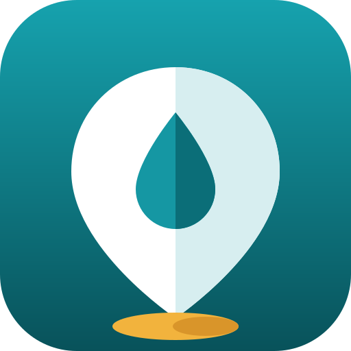

全世界都在地图上
突尼斯以外的地方：在上方搜索框中输入城市名称，或点击一个示例。
例如：
点击一个点可查看名称、路线和页面。金色的点带有历史介绍页面。缺少某座清真寺或礼拜室？ 报告它.
突尼斯的大清真寺
它们的历史、建筑、照片和可靠的资料。
宰图纳清真寺突尼斯市 · 698 年 · 864 年重建凯鲁万大清真寺（欧格白清真寺）凯鲁万 · 670 年 · 现存形制成于 836 年苏塞大清真寺苏塞 · 850-851 年 · 艾格莱卜王朝马赫迪耶大清真寺马赫迪耶 · 916 年 · 法蒂玛王朝斯法克斯大清真寺斯法克斯 · 约 850 年 · 艾格莱卜王朝三门清真寺凯鲁万 · 866 年 · 宣礼塔约建于 1440 年优素福·德伊清真寺突尼斯市 · 1612 年 · 奥斯曼时期哈穆达帕夏清真寺突尼斯市 · 1655 年 · 穆拉德王朝西迪·马赫雷兹清真寺（穆罕默德贝伊清真寺）突尼斯市 · 1692-1697 年 · 穆拉德王朝西迪·萨赫比陵堂（理发师陵墓）凯鲁万 · 17 世纪 · 穆拉德王朝泰斯图尔大清真寺泰斯图尔 · 约 1630 年 · 安达卢西亚移民马立克·本·艾奈斯清真寺（迦太基）迦太基 · 2003 年 · 当代法德伦清真寺与杰尔巴岛的伊巴德派清真寺杰尔巴岛（米敦） · 14 世纪 · 杰尔巴岛卡斯巴清真寺（突尼斯市）突尼斯市 · 1231-1235 年 · 哈夫斯王朝莫纳斯提尔大清真寺莫纳斯提尔 · 9 世纪 · 至 18 世纪历次扩建
﴿إِنَّمَا يَعۡمُرُ مَسَٰجِدَ ٱللَّهِ مَنۡ ءَامَنَ بِٱللَّهِ وَٱلۡيَوۡمِ ٱلۡأٓخِرِ وَأَقَامَ ٱلصَّلَوٰةَ وَءَاتَى ٱلزَّكَوٰةَ وَلَمۡ يَخۡشَ إِلَّا ٱللَّهَۖ فَعَسَىٰٓ أُوْلَٰٓئِكَ أَن يَكُونُواْ مِنَ ٱلۡمُهۡتَدِينَ﴾
“只有笃信安拉和末日，并谨守拜功，完纳天课，并畏惧安拉者，才配修筑安拉的清真寺；这等人或许是遵循正道的。”
《忏悔章》（第 9 章）第 18 节 — 译解：马坚， QuranEnc.com
谢赫阿里·巴拉克的诵读
突尼斯著名的《古兰经》诵读家（1899-1981），采用突尼斯通行的嘎伦读法。请选择一段诵读：它将在屏幕底部的小播放器中播放。
诵读：谢赫阿里·巴拉克（1899-1981），官方频道 « الشيخ علي البراق / Cheikh Ali Al-Barrak »

《古兰经》中的水，以及向所有人开放的蓄水池（“马杰勒”）
在我们的网站 Points d'eau Tunisie 上：关于水的经文和圣训，以及饮水泉、泉水和蓄水池的地图。
→用多种语言了解伊斯兰教和《古兰经》
在我们的网站 The Message 上：简明介绍伊斯兰教的信息、可免费打印的传单、《古兰经》译本和电台。
→您的意见
有意见、发现错误或有想法？请给我们留言：每条留言我们都会阅读。